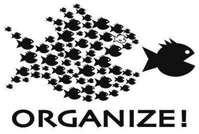

Free Software Foundation Tamilnadu
“Free Software Movement”
What is Free Software?
“Free software” is a matter of liberty, not price. To understand the concept, you should think of “free” as in “free speech,” not as in “free TV/Laptop.”
IT Industry in last 5 years
Contemporary Education System
Solution
- Free Culture
- Free Software
- Collaboration
- Creativity
- Knowledge Sharing
- Open Access
- Open Hardware
- YOU!
Digital Divide
Open Hardware + Free Software + Localization
Free Software
Four Freedoms of Free Software
Freedom 0 - Using
The freedom to run the program, for any purpose
Freedom 1 - Modifying
The freedom to study how the program works, and change it to make it do what you wish
Freedom 2 - Sharing
The freedom to distribute copies of your copies to others
Freedom 3 - Sharing & Modifying
The freedom to improve the program, and release your improvements to others, so that whole community benefits
Misconception

Is Free Software inherently better than the proprietary alternative
Problems with the logic of inherent superiority and open source movement
Free Software Foundation
Richard Mathew Stallman founded the Free Software Foundation, GNU Org

What is this?

Linus and Linux
Linus Benedict Torvalds is a Finnish software engineer and hacker, best known for having initiated the development of the Linux kernel. He later became the chief architect of the Linux kernel, and now acts as the project's coordinator.

GNU/Linux
GNU/Linux
Linux is just a part of operating system, so its GNU+Linux that makes entire operating system.
Today there are few 10's of thousands of GNU/Linux for different purposes as a result of freedom free software offers.
What is the most utopian project you can think of in the whole world?
Wikipedia and Free Knowledge
Free Knowledge + Free Software = Free Society
Both Free Knowledge and Free Software can only co-exist. They both need each other. One cannot exist mutually exclusive of other.
Licenses are very important
Just public domain or no licenses won't do
Users of Free Software
- Yahoo
- Android
- Microsoft
- IBM
குனூ/லினக்ஸ் பயனர் குழு
சேர்ந்துசெய்தல் & பகிர்தல்
Free Software Movements in India
- Free Software Movement of India (fsmi.in)
- Swecha (swecha.org)
- Free Software Movement of Karnataka (fsmk.org)
- Democratic Alliance for Knowledge Freedom (dakf.in)
- Free Software Foundation Tamilnadu
About the Presentation
License : Copyleft
References
- Wikipedia(www.wikipedia.org)
- Free Software Foundation (www.fsf.org)
- GNU (www.gnu.org)
Advantages of Free Software
- Reduced duplication efforts
- Build upon the work of others,saves time.(ex:apache uses Open ssh project implementation)
- Reliability,Stability and Security (“Given enough eyeballs all the bugs are shallow)
- Open Standards and Vendor independence
- Reduced reliance on imports
- Developing local software capacity
- No need to worry about Piracy,IPR,etc
- Localization
Contact us at
- discuss.fsftn.org
- ask@fsftn.org
- aravind@fsftn.org